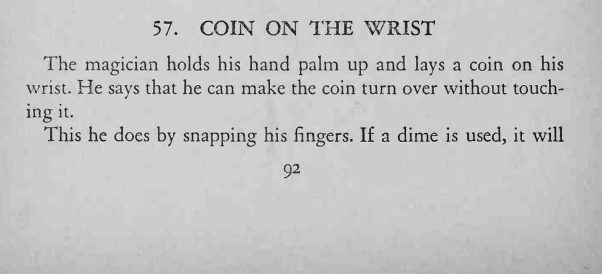
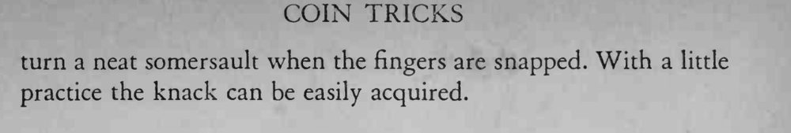

硬币放在手腕上，魔术师打个响指，硬币不用碰就自己翻了个身。
用一角硬币最容易翻；响指的力道和角度要练熟，让硬币翻转而不是滑落。


The magician holds his hand palm up and lays a coin on his wrist. He says that he can make the coin turn over without touching it. This he does by snapping his fingers. If a dime is used, it will turn a neat somersault when the fingers are snapped. With a little practice the knack can be easily acquired.